1060G PRESSURE PUMP ELECTRIC CONTROL
- Path
- Descriptions > 10 ENGINE UNIT > 1060 DIESEL INJECTION SYSTEM > 1060G PRESSURE PUMP ELECTRIC CONTROL
- Kind
- system description
- Applies to
- engines: 1.9 JTD 16V; all production periods
- Interactive page
- https://sloeber94.github.io/elrnDB-aGt/en/#/125000287
Applies to: engines: 1.9 JTD 16V; all production periods
COMPONENT DESCRIPTION
Injection control unit (EDC-16C8 Common Rail)
It is fitted to the right side of the engine bay. The control unit is the 'flash EPROM' type, i.e. reprogrammable from the outside without intervening on the hardware.
The injection control unit integrates the absolute pressure sensor.
PIN-OUT
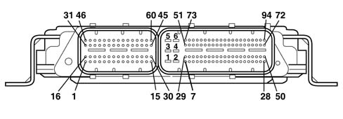
CONNECTOR A
1, Cylinder 3 injector positive
2, Cylinder 2 injector positive
3, Not connected
4, Fuel pressure regulator positive
5, Not connected
6, Not connected
7, Not connected
8, Fuel pressure sensor negative
9, Not connected
10, Not connected
11, Timing sensor positive
12, Engine rpm sensor negative
13, Supercharging sensor positive
14, Not connected
15, Turbo pressure electro-pneumatic valve negative
16, Cylinder 1 injector positive
17, Cylinder 4 injector positive
18, Not connected
19, Not connected
20, Timing sensor negative
21, Not connected
22, Not connected
23, Intake air temperature and supercharging pressure sensor negative
24, Not connected
25, Not connected
26, Not connected
27, Engine rpm sensor positive
28, Fuel pressure sensor positive
29, Flow meter positive
30, Not connected
31, Cylinder 2 injector negative
32, Not connected
33, Cylinder 4 injector negative
34, Fuel pressure regulator negative
35, Insufficient engine oil pressure sensor signal
36, Not connected
37, Air temperature sensor on flow meter signal
38, Not connected
39, Not connected
40, Supercharging sensor signal
41, Coolant temperature sensor negative
42, Air flow meter signal
43, Fuel pressure sensor signal
44, Flow meter negative
45, Not connected
46, Cylinder 3 injector negative
47, Cylinder 1 injector negative
48, Not connected
49, Not connected
50, Timing sensor signal
51, Not connected
52, Not connected
53, Intake air temperature sensor signal
54, Not connected
55, Not connected
56, Not connected
57, Not connected
58, Coolant temperature sensor signal
59, Cut out throttle solenoid valve actuator negative
60, EGR solenoid valve negative
CONNECTOR B
1, Power supply from main relay
2, Control unit earth
3, Not connected
4, Control unit earth
5, Main relay power supply
6, Control unit earth
7, Not connected
8, Accelerator pedal potentiometer track 2 signal
9, Accelerator pedal potentiometer track 1 signal
10, Fuel temperature signal negative
11, Fuel temperature sensor signal
12, Not connected
13, Not connected
14, Not connected
15, Not connected
16, Not connected
17, Brake pedal switch signal
18, Not connected
19, Not connected
20, Not connected
21, Not connected
22, Not connected
23, Not connected
24, Not connected
25, Line K
26, Not connected
27, Not connected
28, Key ON signal
29, Air conditioning compressor relay
30, Accelerator pedal potentiometer track 1 negative
31, Accelerator pedal potentiometer track 2 signal
32, Not connected
33, Not connected
34, Not connected
35, Not connected
36, Not connected
37, Not connected
38, Cruise Control resume
39, Not connected
40, Not connected
41, Not connected
42, Quadinary signal
43, Not connected
44, Not connected
45, Accelerator pedal potentiometer track 1 positive
46, Accelerator pedal potentiometer track 2 positive
47, Immobilizer line W
48, Engien rpm signal output to robotized gearbox
49, Not connected
50, Not connected
51, Not connected
52, Feedback signal from heater plugs control unit
53, Not connected
54, Request to engage climate control from control button
55, Not connected
56, Cruise Control positive
57, Not connected
58, Not connected
59, Not connected
60, Not connected
61, Low C-CAN from ABS control unit
62, High C-CAN from ABS control unit
63, Not connected
64, Not connected
65, Not connected
66, Not connected
67, Not connected
68, Fuel filter heater relay operation
69, Engine cooling fan 2nd speed engagement relay
70, Not connected
71, MIL warning light
72, Main relay activation
73, Not connected
74, Water in fuel filter signal
75, Not connected
76, Not connected
77, Cruise control on/off
78, Signal for cruise control speed decrease
79, Clutch switch signal
80, Brake pedal 2nd switch signal (only for versions with cruise control)
81, Quadinary signal
82, Not connected
83, Low C CAN to body computer
84, High C CAN to body computer
85, Not connected
86, Not connected
87, Not connected
88, Not connected
89, Not connected
90, Engine cooling fan 1st speed engagement relay
91, Fuel pump relay operation
92, Not connected
93, Heater plugs engagement
RPM SENSOR
Specifcations
It is fitted on the cylinder block/crankcase and 'faces' the flywheel on the crankshaft.
It is of the inductive type, i.e. it functions by means of the variation in the magnetic field generated by the passage of the teeth of the flywheel (60-2 teeth).
The fuel injection control unit uses the rpm sensor to:
- determine the rotation speed;
- determine the angle of the crankshaft.
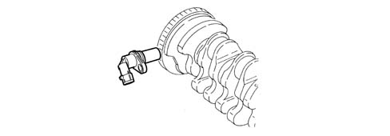
Operation
The passage from full to empty, due to the presence or absence of the tooth, causes a variation in the magnetic flow which is sufficient to generate an induced alternating voltage, resulting from the count of teeth located on a ring (or phonic wheel).
The frequency and range of the voltage sent to the electronic control unit provides it with the angular speed of the crankshaft.
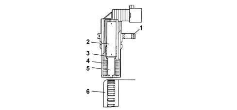
1 - Brass bush
2 - Permanent magnet
3 - Plastic sensor casing
4 - Coil winding
5 - Polar core
6 - Ring gear or flywheel
7 - Coaxial two-wire cable or electrical connection
The distance (gap) for obtaining correct signals, between the end of the sensor and the flywheel, should be between 0.8 and 1.5 mm.
This gap is not adjustable, so if a value outside the tolerance range is measured, check the condition of the sensor and the flywheel.
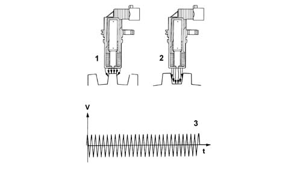
1 - Maximum magnetic flow
2 - Minimum magnetic flow
3 - Induced alternating voltage trend
CAM ANGLE SENSOR
Specifcations
Hall effect; it is mounted on the cylinder head and 'facing' the camshaft pulley.
This pulley comprises a tooth which enables the timing sensor to indicate the engine's timing position.
The fuel injection control unit uses the timing sensor's signal to find out the TDC at the end of compression.
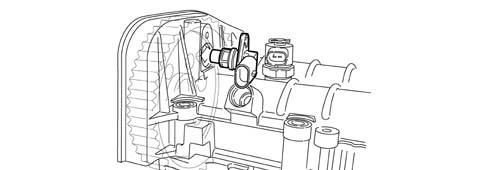
Operation
A semiconducting layer, through which current passes, immersed in a perpendicular magnetic field (force lines perpendicular to the current direction), generates at its ends a difference in potential known as Hall voltage.
If the intensity of the current remains constant, the voltage generated only depends on the intensity of the magnetic field; the intensity of the field simply has to vary periodically to produce a modulated electrical signal, whose frequency is proportional to the speed with which it changes magnetic field. To obtain this change, a tooth on the inside of the pulley moves close to the sensor.
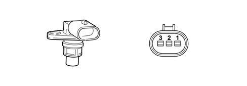
1 - Earth
2 - Signal
3 - Supply
INTAKE AIR TEMPERATURE AND EXCESS PRESSURE SENSOR
Specifcations
The intake air temperature and excess pressure sensor is a component which is designed to measure the pressure and the temperature of the air inside the inlet manifold.
It is fitted on the intake manifold has the task of notifying the injection control unit to:
- regulate the pressure of the variable geometry turbine in order to ensure optimum engine performance in all operating conditions.
- regulating injection duration.
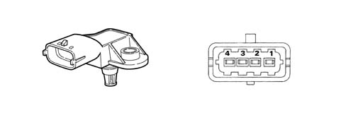
1 - Earth
2 - Air temperature signal
3 - 5 Volt (from ECU)
4 - Supercharging pressure output signal
ENGINE COOLANT TEMPERATURE SENSOR
Specifcations
It is fitted on the thermostatic cup and measures the temperature of the coolant by means of an NTC thermistor which has a negative resistance coefficient.
One NTC thermistor sends the signal to the injection control unit whilst the other one sends the signal to the temperature gauge and warning light in the instrument panel.
The sensor is based on semiconductor technology; so if the sensor temperature increases as the water temperature increases, the resistance decreases.
As the variation in resistance is not linear, for the same temperature increment, it is higher for low temperatures than for high temperatures.
AIR FLOW METER WITH AIR TEMPERATURE SENSOR INTEGRATED
Specifcations
The flow meter is located on the air inlet duct and is of the 'hot film' type.
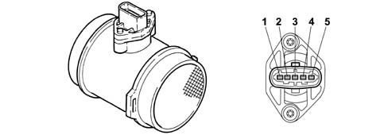
1 - Air temperature sensor output signal
2 - Maintenance current
3 - Negative
4 - 5V supply
5 - Flow meter output signal
The intake air temperature sensor is built into the flow meter.
Operation
The operating principle is based on a heated diaphragm located in a measuring duct through which the intake air entering the engine flows.
The hot film diaphragm is kept at a constant temperature (about 120°C above the incoming air temperature) by the heating resistor.
The air mass passing through the measuring duct tends to draw heat from the diaphragm, so to keep the latter at a constant temperature, some current must flow through the resistor.
This current is measured by a suitable Wheatstone bridge.
The current is therefore proportional to the mass of flowing air.
Fuel temperature sensor
Specifications
It is built into the fuel heater and measures the temperature of the coolant by means of an NTC thermistor which has a negative resistance coefficient.
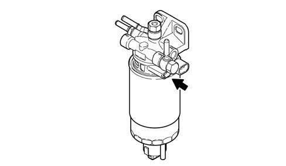
The sensor is based on semiconductor technology; so if the sensor temperature increases as the fuel temperature increases, the resistance decreases.
As the variation in resistance is not linear, for the same temperature increment, it is higher for low temperatures than for high temperatures.
FUEL PRESSURE SENSOR
Specifcations
It is fitted at the end of the 'rail' fuel distribution manifold and has the task of supplying the injection control unit with a 'feedback' signal to:
- regulate the injection pressure
- regulating injection duration.
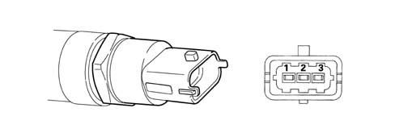
1 - Earth
2 - Output signal
3 - Supply
ACCELERATOR PEDAL POTENTIOMETER
Construction features
The sensor consists of a casing, secured to the accelerator pedal mount, which contains a shaft, in an axial position, connected to two potentiometers: one main one and one safety one.
There is a coil spring on the shaft which guarantees the correct resistance to the pressure whilst a second spring ensures the return on release.
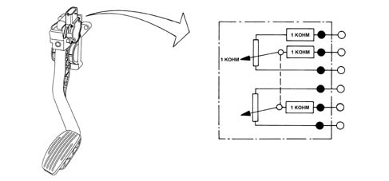
Operation
The position of the accelerator pedal is transformed into an electrical voltage signal and is sent to the fuel injection control unit by the potentiometer connected to the accelerator pedal.
The accelerator pedal position signal is processed together with the information relating to the rpm, to obtain the fuel injection times and relevant pressure.